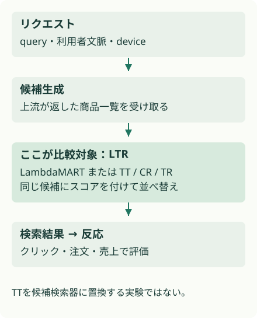
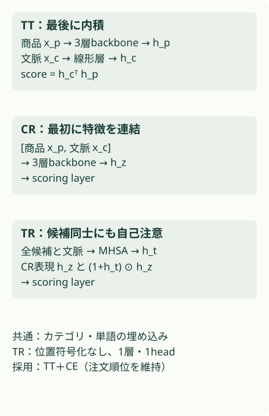

概要
OTTOではTwo-Tower＋CEが本番LambdaMARTを上回った。8週間のA/Bでクリックは1.86%、売上は0.56%増え、販売点数は同水準だった。候補同士を比較するTransformerは、オフラインの注文指標で不利だった。
問題設定
検索リクエストごとに、上流の候補生成器が商品一覧を返す。その後に各商品を採点して並べ替えるのが、この論文のLTR（Learning-to-Rank）だ。候補生成をTwo-Tower検索へ置き換える研究ではない。
学習ラベルは表示された一覧へのクリックと注文で、どちらも複数の商品が正例になりうる。露出位置や既存rankerによって観測が偏るため、ログ上の順位指標だけで売上増加を断定できない。
Two-Towerを置くのは候補生成の後
{kind=link}

核心
著者の主張 · 論文に書かれていること
著者は、本番運用向けに調整されたLightGBM LambdaMARTと3種類のDNNを比較した。Two-Tower＋Softmax CEはクリック順位と商品価値を改善し、注文順位を落とさなかったため、オンライン検証に選ばれた。
解釈・批評 · 読書メモ
この研究は「DNNに移行する価値があるか」には実務上の根拠を与える。ただしカテゴリ・テキストの埋め込みを含む構成全体の比較であり、同じ表現を入力したときの木とニューラルネットの優劣は切り分けていない。埋め込みを木にも与える比較を次に見たい。
モデル / 手法
商品と文脈の結合位置が3方式の違いを生む
数値特徴は価格・割引率・過去の反応などを正規化する。カテゴリは128次元の埋め込み、テキストは単語埋め込みを加算した512次元の表現を使う。商品側のbackboneは幅1024、3層。各層は線形変換、Dropout、ReLU、LayerNormと残差接続からなる（§4–6）。
Two-Tower（TT）は商品をbackbone、文脈を別の線形層へ渡し、sᵢ = h_cᵀ h_pᵢ で採点する。商品表現を先に計算しておける。ただし価格など変化する特徴の更新は必要だ。Cross-Encoder（CR）は商品と文脈を連結し、backboneと出力層で採点する。Transformer（TR）はこれに候補一覧の自己注意を加える。位置符号化を使わず、1層・1headの注意表現 h_t とCRの表現 h_z を (1+h_t) ⊙ h_z で結合して出力する。
正例数をそろえても、クリックと注文の難しさはそろわない
正例数を P = Σᵢyᵢ とすると、CEは ỹᵢ = yᵢ/P を目標分布にし、L_CE = −Σᵢỹᵢ log softmax(s)ᵢ を最小化する。RankNet（RN）は正例と負例のスコア差を扱うペア損失をPで割る。正例が多い一覧の寄与を抑えるためだ。Pがゼロの一覧の扱いは本文だけでは明確でないため、このLabのtoyは両ラベルに正例がある一覧だけを作る。
両方式とも L = α L_click + (1−α) L_order とし、論文のαは0.5。係数が同じでも、ラベル頻度や勾配の大きさが等しいとは限らない。著者はクリックへの偏りとαの設定を注文指標悪化の候補理由に挙げるが、αの比較実験で確定した原因ではない。
比較するLambdaMARTは400本、深さ上限12、葉数25、学習率0.1、LambdaRank目的関数。DNNの「単純」はTTという結合方式の意味であり、数個のパラメータしかないモデルを指さない。
特徴を結合する位置で比較する
{kind=link}

なぜ効きそうか
解釈・推論
商品と文脈を最後に内積で合わせるTTは、候補間の注意計算を必要としない。ランキングに必要な信号が各商品の特徴と文脈の適合度に十分含まれていれば、複雑な一覧相互作用の利点は小さくなる。この説明はresearch_botの仮説で、論文が相互作用の不要性を証明したわけではない。
根拠
注文の順位を守ったTTがオンラインへ進んだ
時間順に分けた学習43M、テスト700kの検索ログを使う。すべての指標は15位までで、NDCG_clickとNDCG_orderは正例を上位に置けた度合い、AIV（Average Item Value）は商品価値を使った売上の代理指標だ（§6、表1）。
| CEモデル | NDCG_click | NDCG_order | AIV |
|---|---|---|---|
| TT | +4.32% | 0.00% | +2.28% |
| CR | +4.32% | −0.30% | +2.28% |
| TR | +2.16% | −1.48% | +2.89% |
数値はLGBMに対する相対差。RNではTT/CR/TRの注文NDCGがそれぞれ−1.48%/−0.59%/−1.78%だった。AIVの上昇だけでは採用を決められない。
§6.2の8週間A/BはTT＋CEと本番LGBMの比較で、クリック+1.86%（t検定 p<0.0001）、売上+0.56%（p<0.01）、販売点数は同水準と報告する。CR/TRをオンラインで比較した結果ではない。信頼区間の正確な端点や割付規模は本文から確定できず、図から数値を推測して補っていない。
オフラインの代理指標をオンラインで確かめる
| 条件 | オフライン @15 | オンライン 8週間 |
|---|---|---|
| 反応 | NDCG_click +4.32% | クリック数 +1.86% |
| 注文 | NDCG_order 0.00% | 販売点数は同水準 |
| 価値 | AIV +2.28% | 売上 +0.56% |
列が収まらない場合は、表を横にスクロールできます。
実行可能な理解
8商品からなる合成検索一覧で、同じ2特徴・同じ線形スコア・同じ学習予算のままαを変える。クリックには「目を引く商品」と「注文する商品」を、注文には後者を正例として与える。学習160一覧とテスト240一覧は別seedで作り、NDCG@3を測る。
これは損失の重みを理解する実験で、TT・MLP・木の比較ではない。モデル比較も同時に小さく実装すると、特徴やチューニングの差が主題を隠すため、ここではαの効果に絞った。
このLabは run.py 単体で実行できます。結果はコードと同じフォルダーに保存されます。
合成実験 · Mechanism PARTIAL
αを動かして、注文順位への影響を見る
同じ特徴・同じモデルのまま、二つの教師信号の重みだけを変える。
クリック損失の重みα：0.0
- NDCG_click@3：0.767038
- NDCG_order@3：0.980009
合成の共有線形スコア。αだけを変えた結果で、OTTOやDNNの性能ではない。
数値の出所：このLabの results.json。論文の測定値ではありません。
結果
合成データ。αで共有スコアの優先順位が変わる例。OTTOの性能、因果関係、モデル間優劣は未検証。
クリック損失の重みα
- n: {'train_queries': 160, 'test_queries': 240, 'items_per_query': 8}
- seed: [19, 20]
| 指標 | NDCG_click@3 | NDCG_order@3 | weights |
|---|---|---|---|
| 0 | 0.767038 | 0.980009 | [0.377655, 7.678537] |
| 0.25 | 0.758673 | 0.9247 | [0.834235, 4.428138] |
| 0.5 | 0.761926 | 0.841611 | [1.178915, 2.985007] |
| 0.75 | 0.762502 | 0.723308 | [1.550025, 2.212208] |
| 1 | 0.751706 | 0.599897 | [1.985611, 1.681083] |
生の results.json
{
"note": "合成データ。αで共有スコアの優先順位が変わる例。OTTOの性能、因果関係、モデル間優劣は未検証。",
"experiments": [
{
"name": "クリック損失の重みα",
"seed": [
19,
20
],
"n": {
"train_queries": 160,
"test_queries": 240,
"items_per_query": 8
},
"metrics": {
"0": {
"NDCG_click@3": 0.767038,
"NDCG_order@3": 0.980009,
"weights": [
0.377655,
7.678537
]
},
"0.25": {
"NDCG_click@3": 0.758673,
"NDCG_order@3": 0.9247,
"weights": [
0.834235,
4.428138
]
},
"0.5": {
"NDCG_click@3": 0.761926,
"NDCG_order@3": 0.841611,
"weights": [
1.178915,
2.985007
]
},
"0.75": {
"NDCG_click@3": 0.762502,
"NDCG_order@3": 0.723308,
"weights": [
1.550025,
2.212208
]
},
"1": {
"NDCG_click@3": 0.751706,
"NDCG_order@3": 0.599897,
"weights": [
1.985611,
1.681083
]
}
}
}
],
"verification": {
"mechanism": "PARTIAL",
"performance": "NOT TESTED",
"scaling": "NOT TESTED",
"production_applicability": "NOT TESTED"
},
"explorer": {
"label": "クリック損失の重みα",
"unit": "",
"metric": "NDCG@3（合成テスト）",
"default": 0,
"frames": [
{
"value": 0.0,
"note": "合成の共有線形スコア。αだけを変えた結果で、OTTOやDNNの性能ではない。",
"bars": [
{
"label": "NDCG_click@3",
"value": 0.767038
},
{
"label": "NDCG_order@3",
"value": 0.980009
}
],
"lines": []
},
{
"value": 0.25,
"note": "合成の共有線形スコア。αだけを変えた結果で、OTTOやDNNの性能ではない。",
"bars": [
{
"label": "NDCG_click@3",
"value": 0.758673
},
{
"label": "NDCG_order@3",
"value": 0.9247
}
],
"lines": []
},
{
"value": 0.5,
"note": "合成の共有線形スコア。αだけを変えた結果で、OTTOやDNNの性能ではない。",
"bars": [
{
"label": "NDCG_click@3",
"value": 0.761926
},
{
"label": "NDCG_order@3",
"value": 0.841611
}
],
"lines": []
},
{
"value": 0.75,
"note": "合成の共有線形スコア。αだけを変えた結果で、OTTOやDNNの性能ではない。",
"bars": [
{
"label": "NDCG_click@3",
"value": 0.762502
},
{
"label": "NDCG_order@3",
"value": 0.723308
}
],
"lines": []
},
{
"value": 1.0,
"note": "合成の共有線形スコア。αだけを変えた結果で、OTTOやDNNの性能ではない。",
"bars": [
{
"label": "NDCG_click@3",
"value": 0.751706
},
{
"label": "NDCG_order@3",
"value": 0.599897
}
],
"lines": []
}
]
}
}合成テストの注文NDCG@3はα=0で0.980、α=1で0.600だった。クリックNDCGは0.752–0.767付近で、クリック損失を重くしてもこの順位指標が単調に上がるとは限らない。CEの最適化とNDCGの改善が同一ではないことにも注意したい。
検証できたこと
合成条件ではαが大きくなると共有スコアの重みが変わり、注文順位の指標が影響を受ける。損失の係数を同じにするだけでは、両指標の維持を保証できない例を確認した。MechanismはPARTIAL。
検証していないこと
OTTOデータ、埋め込み学習、LambdaMART、配信費用、売上増加は未検証。αが実論文のTR不振の原因だったとは言えない。クリックと注文の人工的な競合の強さを変えるとtoyの曲線も変わる。導入判断には同じ特徴・候補・配信予算での比較と、自社A/Bが必要だ。
実装
リポジトリのルートで uv run papers/otto-gbdt-vs-dnn-ltr/run.py を実行する。Python標準ライブラリだけを使い、CPUで完了する。結果は同じディレクトリの results.json に保存する。
乱数を使う実験はseedを固定した。数値は論文の測定値と別に集計している。
原論文・公式コード対応
| 論文 | このLab | 省略・公式コード |
|---|---|---|
| §5.2 CEとα | fit、softmax |
線形2特徴に簡略化。RNとDNNは未実装 |
| §6.1 順位評価 | ndcg |
toyは@3、論文は@15 |
| §6.2 オンライン | 根拠節のみ | 本番実験はNOT TESTED。一次本文から公式実装URLは確認できず |
一次資料は arXiv v1 PDF。公式実装の実行は行っていない。